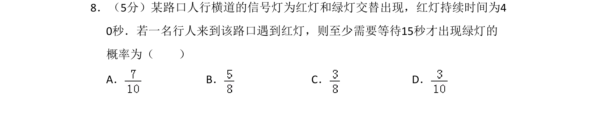
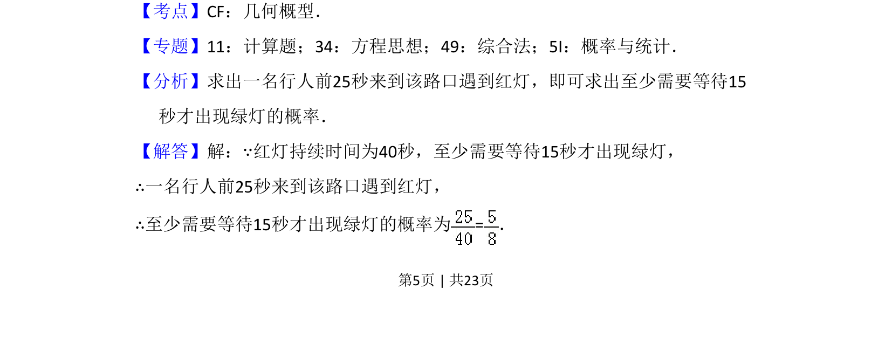
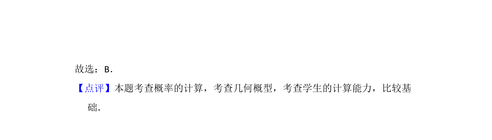

考点：几何概型 概率计算

本题通过行人到达路口遇红灯需等待至少15秒的情境，考查长度型几何概型的概率计算。


📄 原 PDF 第 5 页：
素材/真题/吉林/2008-2024·（吉林）数学高考真题/2016年高考数学试卷（文）（新课标Ⅱ）（解析卷）.pdf
8．（5分）某路口人行横道的信号灯为红灯和绿灯交替出现，红灯持续时间为4 0秒．若一名行人来到该路口遇到红灯，则至少需要等待15秒才出现绿灯的 概率为（ ） A．B．C．D．
【考点】CF：几何概型．菁优网版权所有 【专题】11：计算题；34：方程思想；49：综合法；5I：概率与统计． 【分析】求出一名行人前25秒来到该路口遇到红灯，即可求出至少需要等待15 秒才出现绿灯的概率． 【解答】解：∵红灯持续时间为40秒，至少需要等待15秒才出现绿灯， ∴一名行人前25秒来到该路口遇到红灯， ∴至少需要等待15秒才出现绿灯的概率为=．